These Heels Do Not Exist uses a Deep Convolutional Generative Adversarial Network (DCGAN) model and an extensive shoe dataset from the University of Texas at Austin called the UT Zappos50K (or UT-Zap50K) dataset, which is a shoe dataset of 50,025 catalog images from Zappos.com. Though previous machine learning models have worked with sneakers, they have not really worked with other kinds of shoes. These Heels Do Not Exist is another step towards utilizing machine learning in fashion.
 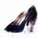
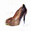
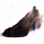
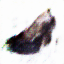
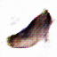
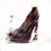
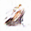
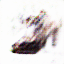
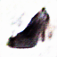
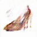
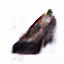
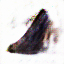
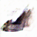
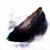
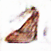
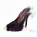
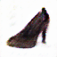
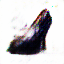
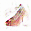
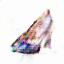
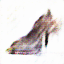
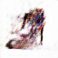
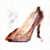
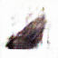
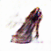
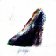
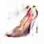
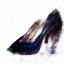
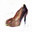
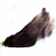
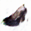
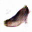
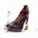
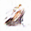
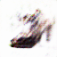
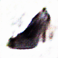
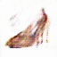
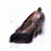
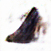
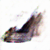
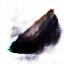
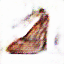
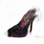
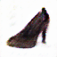
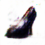
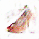
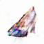
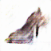
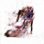
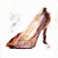
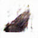
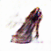
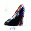
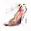
The Dataset for Heels:
UT Zappos50K Dataset
The Model:
Pokemon-DCGAN
The Image Dataset, The Colab Notebook, and The Output:
Heels-DCGAN
The Inspiration:
This X Does Not Exist